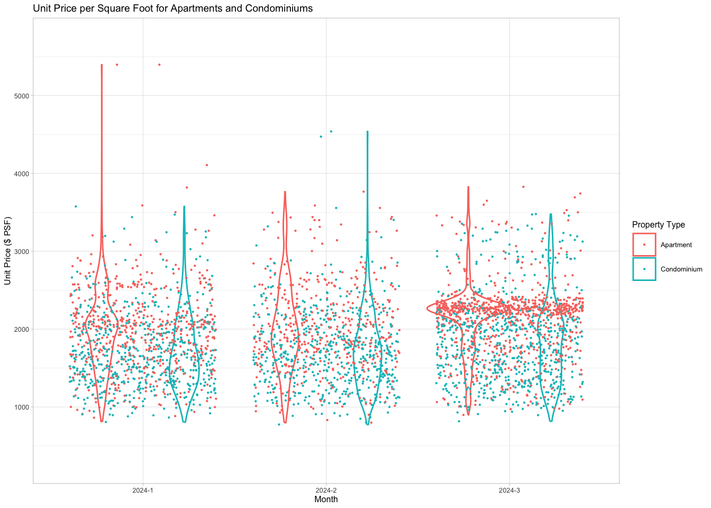
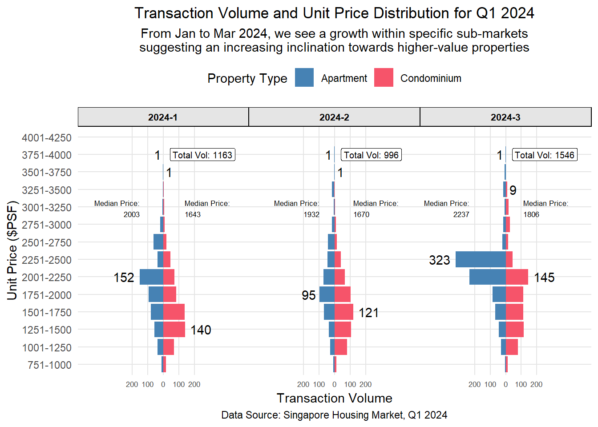

Show the code
#Load packages
pacman::p_load(cowplot, scales, patchwork, tidyverse)
#Import data
file_list <- list.files(path = "data", pattern = "*.csv", full.names = TRUE)
combined_data <- file_list %>%
map_df(read_csv)
In this take-home exercise we are required to:
Select one data visualisation from the Take-home Exercise 1 submission prepared by your classmate,
Critic the submission in terms of clarity and aesthetics, prepare a sketch for the alternative design by using the data visualisation design principles and best practices.
Remake the original design by using ggplot2, ggplot2 extensions and tidyverse packages.
For this exercise, I have chosen our classmate ZOU JIAXUN’s visualization in his Take-home Exercise 1 submission to critique.
Figure 1 below shows the original design of the Unit Price ($PSF) for Private Properties in Singapore during the first quarter of 2024.

This chart fails to demonstrate several observations made by our classmate:
“…a clear disparity emerges between the average unit prices of condominiums and apartments, standing at approximately $1,500 and $2,000, respectively, for the period spanning January to March…”
“…Noteworthy is the discernible uptick in both unit price and transaction volume from January to March 2024…”
“…Despite an overall reduction in total transactions vis-a-vis the preceding year, there is an unmistakable trend towards growth within specific sub-markets, suggesting an increasing inclination towards higher-value properties…”
Other concerns:
The title provides a general description but lacks specificity. It does not specify the time period covered by the visualization, nor does it offer insight into the context or main focus of the visualization. A more detailed title and subtitle would enhance clarity and understanding for the audience.
The x-axis represents the three months of Q1 2024 instead of displaying transaction volume, a metric frequently referenced by the author. Utilizing the x-axis to depict transaction volume would enhance clarity significantly.
The color selection is problematic due to the light-colored background, which matches the hue of the violin plot. This makes it strenuous for the eyes to distinguish between elements.
Fonts, titles, x-ticks, and legends are small and difficult to discern.
A violin is often not well understood by the general public. In this case, the use of a violin plot is worse as the writer intends to make several comparisons that are not obvious from said plot.
This scenario seems appropriate for a similar makeover done by Michael Djohan for another student.
Acknowledging that point plots may distract and add little value, we omitted them. Instead, a modified bar chart resembling a violin plot was adopted. This alternative retains the visual appeal of a violin plot while providing clearer and more informative comparisons. We also decided to add annotations for median prices and transaction volume. A facet plot is used to distinctively compare between the three months for Q1 2024.

Let us first load the files and merge them into combined_data #Load packages
#Load packages
pacman::p_load(cowplot, scales, patchwork, tidyverse)
#Import data
file_list <- list.files(path = "data", pattern = "*.csv", full.names = TRUE)
combined_data <- file_list %>%
map_df(read_csv)In this chunk of code, we adopted exactly similar modifications to the data to ensure perfect replication. Nothing new is added here.
The data preparation here involves:
formatting the Sale Date column into Quarters and Months using the dmy() function from the lubridate package.
Removing NA Values
Filter for Q1 2024 data only
Filter for “Apartment” and “Condominium” only
# filtering the data
filtered_data <- combined_data %>%
mutate(Sale_Date = dmy(`Sale Date`)) %>%
filter((year(Sale_Date) == 2023 &
month(Sale_Date) %in% 1:12) |
(year(Sale_Date) == 2024 &
month(Sale_Date) %in% 1:3)) %>%
mutate(Quarter_Sale_Data = case_when(
between(Sale_Date, as.Date("2023-01-01"), as.Date("2023-03-31")) ~ "Q1_2023",
between(Sale_Date, as.Date("2023-04-01"), as.Date("2023-06-30")) ~ "Q2_2023",
between(Sale_Date, as.Date("2023-07-01"), as.Date("2023-09-30")) ~ "Q3_2023",
between(Sale_Date, as.Date("2023-10-01"), as.Date("2023-12-31")) ~ "Q4_2023",
between(Sale_Date, as.Date("2024-01-01"), as.Date("2024-03-31")) ~ "Q1_2024",
TRUE ~ NA_character_
)) %>%
filter(!is.na(Quarter_Sale_Data)) %>%
filter(Quarter_Sale_Data == "Q1_2024") %>%
mutate(Month_Sale_Data = paste0(year(Sale_Date), "-", month(Sale_Date)))
filtered_data <- filtered_data %>%
filter(`Property Type` %in% c("Apartment", "Condominium"))Unit Price ($ PSF)From here on, we begin to make our own modifications which are plenty and necessary. Firstly, we realize that we construct our desired plot we need our Unit Price ($ PSF)to be categorized into bins as Unit_Price_Bin
# Creating bins
breaks <- c(750, 1000, 1250, 1500, 1750, 2000, 2250, 2500, 2750, 3000, 3250, 3500, 3750, 4000)
filtered_data <- filtered_data %>%
filter(!is.na(`Unit Price ($ PSF)`)) %>%
filter(`Unit Price ($ PSF)` <= 4000) %>%
mutate(Unit_Price_Bin = cut(`Unit Price ($ PSF)`,
breaks = breaks,
labels = c("751-1000", "1001-1250", "1251-1500", "1501-1750", "1751-2000", "2001-2250", "2251-2500", "2501-2750", "2751-3000", "3001-3250", "3251-3500", "3501-3750", "3751-4000"),
include.lowest = TRUE,
right = FALSE)) %>%
filter(!is.na(Unit_Price_Bin))We save our processed data into .rds data format files using the write_rds() of readr package. The output file is saved in rds sub-folder. We do this to reduce the loading time and more importantly, we can avoid uploading the large raw files onto GitHub.
write_rds(filtered_data, "data/rds/filtered_data.rds")
filtered_data <- read_rds("data/rds/filtered_data.rds")The code creates a base dataset (base_data) by grouping the filtered data (filtered_data) by month of sale, unit price bin, and property type. It calculates the count of transactions (Count) and assigns negative values to transactions related to apartments (Trans_Vol) to prepare for a pyramid chart.
# Creating base data for pyramid
base_data <- filtered_data %>%
group_by(Month_Sale_Data, Unit_Price_Bin, `Property Type`) %>%
summarise(Count = n()) %>%
ungroup() %>%
mutate(Trans_Vol = ifelse(`Property Type` == "Apartment", Count * (-1), Count))It computes the median unit price (median_unit_price) for each month and property type combination, adjusting the values for apartments to negative if necessary.
# median Unit Price
UnitPrice_median <- filtered_data %>%
group_by(Month_Sale_Data, `Property Type`) %>%
summarise(median_unit_price = median(`Unit Price ($ PSF)`)) %>%
mutate(median_unit_price = ifelse(`Property Type` == "Apartment", median_unit_price * (-1), median_unit_price)) %>%
ungroup()The code calculates the maximum and minimum transaction volumes (max_vol, min_vol) for each month and property type, as well as the total transaction volume for each month (sum_transvolume_month).
# transvolume_maxmin as transaction volume by month
transvolume_maxmin <- base_data %>%
group_by(Month_Sale_Data,`Property Type`) %>%
summarise(max_vol = max(abs(Trans_Vol)),
min_vol = min(abs(Trans_Vol))) %>%
ungroup()
# transvolume_month as total volume by month
transvolume_month <- base_data %>%
group_by(Month_Sale_Data) %>%
summarise(sum_transvolume_month = sum(abs(Trans_Vol))) %>%
ungroup()It determines the total transaction volume for each unit price bin and property type combination (sum_transvolume_property).
# transvolume_property as total transaction volume by property type
transvolume_property <- base_data %>%
group_by(Unit_Price_Bin, `Property Type`) %>%
summarise(sum_transvolume_property = sum(Trans_Vol)) %>%
ungroup()# joining multiple tables
transaction_data <- base_data %>%
left_join(transvolume_maxmin, by = c('Month_Sale_Data', 'Property Type')) %>%
left_join(transvolume_month, by = 'Month_Sale_Data') %>%
left_join(transvolume_property, by = c('Unit_Price_Bin', 'Property Type')) %>%
left_join(UnitPrice_median, by = c('Month_Sale_Data', 'Property Type'))
transaction_data$Unit_Price_Bin <- factor(transaction_data$Unit_Price_Bin, exclude = NULL)The code generates signals (signal, signal1) to indicate whether a transaction volume or median unit price falls within certain ranges, differentiating between property types. These signals are based on conditions comparing transaction volumes and median unit prices with predefined ranges.
transaction_data <- transaction_data %>%
mutate(signal = case_when((min_vol == abs(Trans_Vol) | max_vol == abs(Trans_Vol)) & `Property Type` == "Apartment" ~ -1,
(min_vol == abs(Trans_Vol) | max_vol == abs(Trans_Vol)) & `Property Type` == "Condominium" ~ 1, TRUE~0)) %>%
# Assuming `Unit_Price_Bin` is a factor with ordered levels representing price ranges
mutate(signal1 = case_when(
`Property Type` == "Apartment" & abs(median_unit_price) >= as.numeric(sub("\\-(\\d+)$", "", Unit_Price_Bin)) &
abs(median_unit_price) <= as.numeric(sub("^\\d+\\-", "", Unit_Price_Bin)) ~ -1,
`Property Type` == "Condominium" & abs(median_unit_price) >= as.numeric(sub("\\-(\\d+)$", "", Unit_Price_Bin)) &
abs(median_unit_price) <= as.numeric(sub("^\\d+\\-", "", Unit_Price_Bin)) ~ 1,
TRUE ~ 0
))
#Order factors
transaction_data$`Property Type` <- fct_relevel(transaction_data$`Property Type`, "Apartment")
transaction_data$Unit_Price_Bin <- fct_relevel(transaction_data$Unit_Price_Bin, "751-1000", "1001-1250")This code generates a visualization using ggplot2 to depict the transaction volume and unit price distribution for the first quarter of 2024, comparing apartments and condominiums. Here are the key details:
Plot Components:
geom_col: A column chart is created with Unit_Price_Bin on the x-axis and Trans_Vol (transaction volume) on the y-axis, filled by Property Type.
geom_text: Text labels are added to the plot to indicate the absolute transaction volume (abs(Trans_Vol)) for significant data points where signal is not zero. The labels are positioned above or below the bars depending on the Property Type.
Another geom_text layer adds labels for significant data points based on signal1, showing the median price with labels positioned to the left or right of the bars depending on the Property Type.
Aesthetics:
The fill colors for the bars are manually set using scale_fill_manual to distinguish between apartment and condominium properties.
Text labels for transaction volume are colored black (color = “black”) to ensure visibility against the bar colors.
Axis and Labels:
The y-axis is labeled “Transaction Volume” and is scaled to have breaks at intervals of 100 with a range from -500 to 500.
The x-axis is labeled “Unit Price ($PSF)”.
Titles, subtitles, and captions are provided for clarity and context.
Faceting:
Theme Customization:
Overall, the visualization effectively presents transaction volume and unit price distributions, allowing for easy comparison between apartment and condominium properties across different months of the first quarter of 2024.
# Setting the axis range and limits
tvol_range_breaks <- seq(-200, 200, 100)
tvol_range_limits <- c(-500, 500)
ggplot(data = transaction_data) +
geom_col(aes(x = Unit_Price_Bin, y = Trans_Vol, fill = `Property Type`)) +
geom_text(data = transaction_data[transaction_data$signal != 0, ],
aes(x = Unit_Price_Bin , y = Trans_Vol + signal * 5, label = abs(Trans_Vol),
hjust = ifelse(`Property Type` == "Apartment", 1.2, -0.2)),
vjust = 0.5) +
geom_text(data = transaction_data[transaction_data$signal1 != 0, ],
aes(x = Unit_Price_Bin + signal1 * 0.5, y = Trans_Vol,
label = paste("Median Price:", round(abs(median_unit_price), 0), sep = "\n"),
hjust = ifelse(`Property Type` == "Apartment", 1, 0)),
vjust = 4.7,
size = 2.3,
color = "black") + # Set text color to black
scale_fill_manual(values = c("Apartment" = "steelblue", "Condominium" = "#f6546a")) +
coord_flip() +
scale_y_continuous("Transaction Volume",
limits = tvol_range_limits,
breaks = tvol_range_breaks,
labels = function(x) paste0(abs(x))) +
scale_x_discrete("Unit Price ($PSF)", labels = c("751-1000", "1001-1250", "1251-1500", "1501-1750", "1751-2000", "2001-2250", "2251-2500", "2501-2750", "2751-3000", "3001-3250", "3251-3500", "3501-3750", "3751-4000", "4001-4250")) +
labs(
title = "Transaction Volume and Unit Price Distribution for Q1 2024",
subtitle = "From Jan to Mar 2024, we see a growth within specific sub-markets\nsuggesting an increasing inclination towards higher-value properties",
caption = "Data Source: Singapore Housing Market, Q1 2024"
) +
theme_minimal() +
facet_wrap(~ Month_Sale_Data, nrow = 1) +
geom_label(
x = 13,
y = 42,
aes(label = paste("Total Vol:", sum_transvolume_month, sep = " ")),
hjust = "left",
size = 2.7 ) +
theme(
axis.title.x = element_text(vjust = 0.5),
axis.ticks.y = element_blank(),
axis.text.x = element_text(size = 6.5),
legend.position = "top",
strip.background = element_rect(fill = "grey90"),
strip.text.x = element_text(size = 8, color = "black", face = "bold"),
plot.title = element_text(hjust = 0.5),
plot.subtitle = element_text(hjust = 0.5),
plot.caption = element_text(hjust = 0.5),
panel.grid.major.x = element_line(color = "grey90", linetype = "solid"),
panel.grid.major.y = element_line(color = "grey90", linetype = "solid"),
panel.spacing.x = unit(0, "line"),
panel.spacing.y = unit(0, "line"),
panel.grid.major = element_blank(),
panel.grid.minor = element_blank()
)
Transaction Volume and Unit Price Distribution:
Purpose: The plot aims to visualize the relationship between transaction volume and unit price distribution for the first quarter of 2024 in the Singapore housing market. Understanding this relationship is crucial for identifying trends and patterns in the market dynamics over time.
How it is better: Labels for total transaction volume is explicitly stated for each month in a visible manner to the addition of the informative distribution plot and median prices are explicitly stated too with min and max prices clearly displayed and indicated on the cahrt.
Comparison between Apartment and Condominium:
Key Comparison: The plot compares transaction volume and unit price distribution between apartments and condominiums in the housing market. This comparison is relevant as it the student wanted to demonstrate the shift in tendency towards pricier properties for these two properties respectively.
How it is better: Upon the removal of the point plots, we have less distraction now and have also added contrasting color schemes to both so that it is easier to compare and contrast. It is also evident that the observation made by the student was only relevant from February to March and there was actually a decline in growth in the specific sub-markets for both from January to Fefruary.
Data Source:
Source: The data used in the analysis is sourced from the Singapore Housing Market for the first quarter of 2024. This dataset is a reliable and credible source commonly utilized by real estate analysts and researchers to study market trends and dynamics.
How it is better: Mentioning the data source adds credibility to the findings presented in the analysis, reassuring stakeholders of the robustness and reliability of the insights derived.
Facet Wrap by Month:
Segmentation Rationale: The data is segmented by month to analyze the transaction volume and unit price distribution trends over time within the first quarter of 2024. This segmentation enables the identification of monthly variations, seasonal patterns, and temporal trends in the housing market.
How it is better: Segmenting the data by month allows us to plot the transaction volume on the x-axis instead and thereby providing additional clarity to the visualisation.
Total Volume Label:
Significance: The “Total Vol” label indicates the total transaction volume for each month, providing a summarized view of market activity within the specified timeframe. This label enhances the interpretation of the chart by offering a quantitative measure of the overall market activity, aiding stakeholders in understanding the scale and magnitude of transactions occurring in the housing market.
How it is better: Including the total volume label contextualizes the transaction volume data, allowing stakeholders to quickly grasp the extent of market activity and its implications for market liquidity, demand-supply dynamics, and investment opportunities.